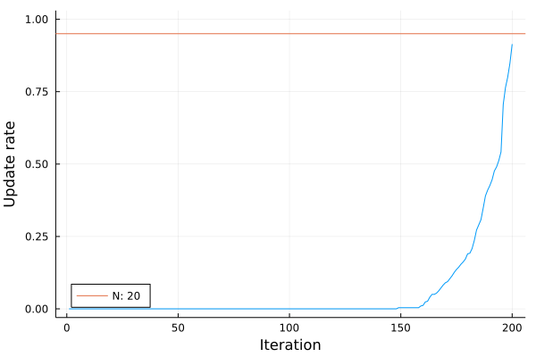

Particle Gibbs for non-linear models
using AdvancedPS
using Random
using Distributions
using Plots
using AbstractMCMC
using Random123
using Libtask: TArray
using LibtaskWe consider the following stochastic volatility model:
\[ x_{t+1} = a x_t + v_t \quad v_{t} \sim \mathcal{N}(0, r^2)\]
\[ y_{t} = e_t \exp(\frac{1}{2}x_t) \quad v_{t} \sim \mathcal{N}(0, 1)\]
Here we assume the static parameters $\theta = (q^2, r^2)$ are known and we are only interested in sampling from the latent state $x_t$. We can reformulate the above in terms of transition and observation densities:
\[ x_{t+1} \sim f_{\theta}(x_{t+1}|x_t) = \mathcal{N}(a x_t, q^2)\]
\[ y_t \sim g_{\theta}(y_t|x_t) = \mathcal{N}(0, \exp(\frac{1}{2}x_t)^2)\]
with the initial distribution $f_0(x) = \mathcal{N}(0, q^2)$.
Parameters = @NamedTuple begin
a::Float64
q::Float64
T::Int
end
mutable struct NonLinearTimeSeries <: AbstractMCMC.AbstractModel
X::TArray
θ::Parameters
NonLinearTimeSeries(θ::Parameters) = new(TArray(Float64, θ.T), θ)
end
f(model::NonLinearTimeSeries, state, t) = Normal(model.θ.a * state, model.θ.q)
g(model::NonLinearTimeSeries, state, t) = Normal(0, exp(0.5 * state)^2)
f₀(model::NonLinearTimeSeries) = Normal(0, model.θ.q)Let's simulate some data
a = 0.9 # State Variance
q = 0.5 # Observation variance
Tₘ = 200 # Number of observation
Nₚ = 20 # Number of particles
Nₛ = 500 # Number of samples
seed = 1 # Reproduce everything
θ₀ = Parameters((a, q, Tₘ))
rng = Random.MersenneTwister(seed)
x = zeros(Tₘ)
y = zeros(Tₘ)
reference = NonLinearTimeSeries(θ₀)
x[1] = 0
for t in 1:Tₘ
if t < Tₘ
x[t + 1] = rand(rng, f(reference, x[t], t))
end
y[t] = rand(rng, g(reference, x[t], t))
endHere are the latent and observation series:
plot(x; label="x")
xlabel!("t")
plot(y; label="y")
xlabel!("x")
Each model takes an AbstractRNG as input and generates the logpdf of the current transition:
function (model::NonLinearTimeSeries)(rng::Random.AbstractRNG)
x₀ = rand(rng, f₀(model))
model.X[1] = x₀
score = logpdf(g(model, x₀, 1), y[1])
Libtask.produce(score)
for t in 2:(model.θ.T)
state = rand(rng, f(model, model.X[t - 1], t - 1))
model.X[t] = state
score = logpdf(g(model, state, t), y[t])
Libtask.produce(score)
end
endAdvancedPS relies on Libtask to copy models during their execution but we need to make sure the internal data of each model is properly copied over as well.
Libtask.tape_copy(model::NonLinearTimeSeries) = deepcopy(model)Here we use the particle gibbs kernel without adaptive resampling.
model = NonLinearTimeSeries(θ₀)
pgas = AdvancedPS.PG(Nₚ, 1.0)
chains = sample(rng, model, pgas, Nₛ; progress=false);The trajectories are not stored during the sampling and we need to regenerate the history of each sample if we want to look at the individual traces.
function replay(particle::AdvancedPS.Particle)
trng = deepcopy(particle.rng)
Random123.set_counter!(trng.rng, 0)
trng.count = 1
model = NonLinearTimeSeries(θ₀)
trace = AdvancedPS.Trace(AdvancedPS.GenericModel(model, trng), trng)
score = AdvancedPS.advance!(trace, true)
while !isnothing(score)
score = AdvancedPS.advance!(trace, true)
end
return trace
end
trajectories = map(chains) do sample
replay(sample.trajectory)
end
particles = hcat([trajectory.model.f.X for trajectory in trajectories]...) # Concat all sampled states
mean_trajectory = mean(particles; dims=2)We can now plot all the generated traces. Beyond the last few timesteps all the trajectories collapse into one. Using the ancestor updating step can help with the degeneracy problem.
plot()
scatter(particles; label=false, opacity=0.01, color=:black)
plot!(x; color=:darkorange, label="Original Trajectory")
plot!(mean_trajectory; color=:dodgerblue, label="Mean trajectory", opacity=0.9)
xlabel!("t")
ylabel!("State")
We can also check the mixing as defined in the Gaussian State Space model example. As seen on the scatter plot above, we are mostly left with a single trajectory before timestep 150. The orange bar is the optimal mixing rate for the number of particles we use.
update_rate = sum(abs.(diff(particles; dims=2)) .> 0; dims=2) / Nₛ
plot(update_rate; label=false, ylim=[0, 1], legend=:bottomleft)
hline!([1 - 1 / Nₚ]; label="N: $(Nₚ)")
xlabel!("Iteration")
ylabel!("Update rate")
This page was generated using Literate.jl.